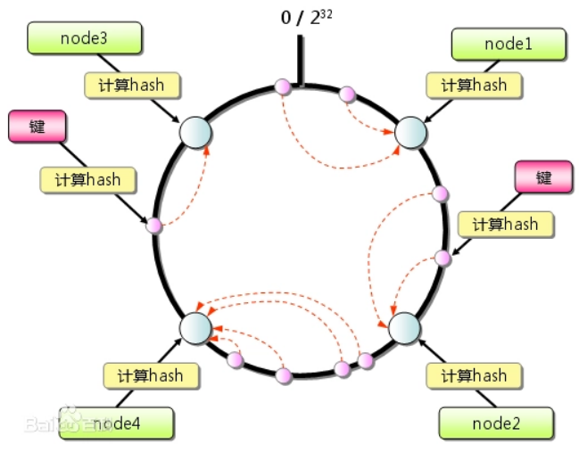

主要总结了Nginx提供web服务、实现四层和七层反向代理的配置方法。
Nginx配置文件
主配置文件：nginx.conf
子配置文件: include conf.d/*.conf
fastcgi， uwsgi，scgi 等协议相关的配置文件
mime.types：支持的mime类型，MIME(Multipurpose Internet Mail Extensions)多用途互联网邮件扩展类型，MIME消息能包含文本、图像、音频、视频以及其他应用程序专用的数据，是设定某种扩展名的文件用一种应用程序来打开的方式类型，当该扩展名文件被访问的时候，浏览器会自动使用指定应用程序来打开。多用于指定一些客户端自定义的文件名，以及一些媒体文件打开方式。
配置文件格式
配置文件由指令与指令块构成
每条指令以;分号结尾，指令与值之间以空格符号分隔
可以将多条指令放在同一行,用分号分隔即可,但可读性差,不推荐
指令块以{ }大括号将多条指令组织在一起,且可以嵌套指令块
include语句允许组合多个配置文件以提升可维护性
使用#符号添加注释，提高可读性
使用$符号使用变量
部分指令的参数支持正则表达式
1 2 3 4 5 6 7 8 9 10 11 12 13 14 15 16 17 18 19 20 21 22 23 24 25 26 27 28 29 30 31 32 33 34 35 36 37 38 39 40 41 42 43 44 45 46 47 # 主配置文件可分为event、http、mail、stream四部分 # 全局配置端，对全局生效，主要设置nginx的启动用户/组，启动的工作进程数量，工作模式，Nginx的PID # 事件驱动相关的配置 # events设置快，主要影响nginx服务器与用户的网络连接，比如是否允许同时接受多个网络连接，使用哪种事件驱动模型处理请求，每个工作进程可以同时支持的最大连接数，是否开启对多工作进程下的网络连接进行序列化等。 # http/https 协议相关配置段 # http块是Nginx服务器配置中的重要部分，缓存、代理和日志格式定义等绝大多数功能和第三方模块都可以在这设置，http块可以包含多个server块，而一个server块中又可以包含多个location块，server块可以配置文件引入、MIME-Type定义、日志自定义、是否启用sendfile、连接超时时间和单个链接的请求上限等。 # 默认配置文件不包括下面两个块 # mail 协议相关配置段 # stream 服务器相关配置段 # 导入其他路径的配置文件
Web服务配置 基于不同的IP、不同的端口以及不用得域名实现不同的虚拟主机，依赖于核心模块ngx_http_core_module实现。
简单示例 根据用户输入的url提供不同的页面，不同的访问错误页面，设置长连接、错误日志
1 2 3 4 5 6 7 8 9 10 11 12 13 14 15 16 17 18 19 20 21 22 23 24 25 26 27 28 29 30 31 32 # 为了便于修改和阅读，防止主配置文件过于臃肿，编写子配置文件 # 在主配置文件http段中添加server段（在配置文件的最后面添加此行） # 子配置文件
location匹配详解 1 2 3 4 5 6 7 8 9 10 11 12 13 14 15 16 17 18 19 20 21 22 23 24 25 26 27 28 29 30 31 32 33 34 35 36 37 38 39 40 41 42 43 44 45 46 47 48 49 50 51 52 53 54 55 location [ = | ~ | ~* | ^~ ] uri { ... }# 官方范例 # 生产案例 # 直接匹配网站根会加速Nginx访问处理 # 静态资源配置方法1 # 静态资源配置方法2,应用较多
状态页 基于nginx 模块 ngx_http_stub_status_module
1 2 3 4 5 6 7 8 9 10 11 12 13 14 15 16 17 18 19 20 # 实际使用时可加上验证功能 # 状态页中数据 # 使用curl访问状态页配合文本工具筛选可统计访问情况
实用变量，其中$proxy_add_x_forwarded_for可解决后端服务器不能统计客户端访问的问题
1 2 3 4 5 6 7 8 9 10 11 12 13 14 15 16 $ remote_addr $ proxy_add_x_forwarded_for $ args $ is_args $ document_root $ request_body_file $ request_uri $ scheme $ server_protocol $ host $ http_user_agent $ cookie_<name> $ http_cookie $ http_<name> # 也可以使用set 自定义变量
HTTPS配置 nginx 的https 功能基于模块ngx_http_ssl_module实现。yum安装自带，编译安装默认没有。
1 2 3 4 5 6 7 8 9 10 11 12 13 14 15 16 17 18 19 # 自签名CA证书和服务器证书过程省略 # 将服务器证书和CA证书.crt文件内容合并为一个.pem文件，服务器证书内容需要在前 # 将所有请求重定向为https，在对安全有要求的网站非常常见，即使输入了使用http协议依然会转到https页面。
rewrite功能 需要用 ngx_http_rewrite_module 模块，编译安装需要PCRE库。
rewrite是nginx服务器的重要功能之一，实现URL重写。rewrite指令通过正则表达式的匹配来改变URI，可以同时存在一个或多个指令，按照顺序依次对URI进行匹配，rewrite主要是针对用户请求的URL或者是URI做具体处理。
实现在改变网站结构之后，客户端不需要修改原来的书签，也无需其他网站修改我们的链接，就可以设置为访问，另外还可以在一定程度上提高网站的安全性。
1 2 3 4 5 6 7 8 9 10 # rewrite有四种不同的flag，分别是redirect(临时重定向302)、permanent(永久重定向301)、break 和last。其中前两种是跳转型的flag，后两种是代理型 # 临时重定向，重写完成后以临时重定向方式直接返回重写后生成的新URL给客户端，由客户端重新发起请求;使用相对路径,或者http://或https://开头，状态码：302 # 重写完成后以永久重定向方式直接返回重写后生成的新URL给客户端，由客户端重新发起请求，状态码：301。与临时的区别是浏览器会缓存，只要有缓存不需要访问代理进行重定向。 # 重写完成后,停止对当前URL在当前location中后续的其它重写操作，而后直接跳转至重写规则配置块之后的其它配置;结束循环，建议在location中使用。适用于一个URL一次重写 # 重写完成后,停止对当前URI在当前location中后续的其它重写操作，而后对新的URL启动新一轮重写检查，不建议在location中使用 # 适用于一个URL多次重写，要注意避免出现超过十次以及URL重写后返回错误的给用户。
案例
1 2 3 4 5 6 7 8 9 10 11 12 13 14 15 16 17 18 19 20 21 22 23 # 接上文https配置，自动跳转https # 访问错误网页则回到某指引页面
反向代理 反向代理：reverse proxy，指的是代理外网用户的请求到内部的指定的服务器，并将数据返回给用户的
一种方式。
Nginx代理模块常用的有：
ngx_http_proxy_module： 将客户端的请求以http协议转发至指定服务器进行处理
ngx_http_upstream_module ：用于定义为proxy_pass,fastcgi_pass,uwsgi_pass等指令引用的后端服务器分组
ngx_stream_proxy_module：将客户端的请求以tcp协议转发至指定服务器处理
ngx_http_fastcgi_module：将客户端对php的请求以fastcgi协议转发至指定服务器助理
ngx_http_uwsgi_module： 将客户端对Python的请求以uwsgi协议转发至指定服务器处理
HTTP协议代理 1 2 3 4 5 6 7 8 9 10 11 12 13 14 15 16 17 18 19 20 21 22 23 24 25 26 27 28 29 30 31 32 33 # proxy_pass; 用来设置将客户端请求转发给的后端服务器的主机，可以是主机名(将转发至后端服务做为主机头首部)、IP地址：端口的方式 # IP透传 # 在后端httpd服务器修改配置,添加日志记录X-Forwarded-For字段 # 在后端服务器查看日志 # 缓存功能
示例
1 2 3 4 5 6 7 8 9 10 11 12 13 14 15 16 17 18 19 20 21 22 23 24 25 # 针对部分页面代理 # 客户端访问http://www.test.com/static,实际访问的是后端服务器10.0.0.18的/var/www/html/static/index.html # proxy_pass http://10.0.0.18:80/; # 针对部分资源 # 缓存部分页面 # proxy_cache_key $host$uri$is_args$args ; 完整url # proxy_set_header X-Real-IP $remote_addr ;
负载均衡 Nginx 可以基于ngx_http_upstream_module模块提供服务器分组转发、权重分配、状态监测、调度算法等高级功能。
1 2 3 4 5 6 7 8 9 10 11 12 13 14 15 16 17 18 19 # 自定义一组服务器，配置在http块内 # 可以是server name，也可以是IP:port # server后可加如下参数： # 若缓存放在后端服务器，调度到别的主机会丢失缓存，因此需要一致性hash 算法调度

如果节点较少可能出现哈希环偏斜现象，即聚集分布导致一个节点处理大多数请求，可以按比例增加虚拟节点解决该问题，如1:1变为1000:1000。
调度示例
1 2 3 4 5 6 7 8 9 10 11 12 13 14 15 16 17 18 19 20 21 22 # 访问http://www.test.com/web调度到2台后端服务器
四层负载均衡 其基于ngx_stream_proxy_module模块实现tcp负载，依然需要模块ngx_stream_upstream_module
1 2 3 4 5 6 7 8 9 10 11 12 13 14 15 16 17 18 19 20 21 22 23 stream { #定义stream相关的服务；Context:main
案例
1 2 3 4 5 6 7 8 9 10 11 12 13 14 15 16 17 18 19 20 21 22 23 24 25 26 27 28 29 30 31 32 33 34 35 36 # 代理mysql和redis，同一主机可在多个组内 # Nginx的四层代理与LVS的不同，LVS只修改MAC地址，而Nginx对客户端和后端分别作三次握手，相当于默认后端不能看到真实客户端IP， # DNS代理
FastCGI nginx/apache服务器并不能直接运行 php、java这样的文件，apache实现的方式是打补丁，但是nginx缺通过与第三方基于协议实现，即通过某种特定协议将客户端请求转发给第三方服务处理，第三方服务器会新建新的进程处理用户的请求，处理完成后返回数据给Nginx并回收进程.
基于模块ngx_http_fastcgi_module
1 2 3 4 5 6 fastcgi_pass address:port; #转发请求到后端服务器，address为后端的fastcgi server的地址，可用位置：location, if in location
案例
1 2 3 4 5 6 7 8 9 10 11 12 13 # 根据是否为php资源来调度（动静分离） # fastcgi_param SCRIPT_FILENAME /data/php$fastcgi_script_name ;
系统参数优化 默认的Linux内核参数考虑的是最通用场景，不符合用于支持高并发访问的Web服务器的定义。实际使用需要根据nginx的角色如内容服务器、反向代理或者提供压缩服务器的服务器，进行不同的内核参数调整。
/etc/sysctl.conf 1 2 3 4 5 6 7 8 9 10 11 12 13 14 15 16 17 18 19 20 21 22 fs.file-max = 1000000 #表示单个进程较大可以打开的句柄数# 四个参数根据业务不同有较大差异 # 选项用于设定系统中最多有多少个TCP套接字不被关联到任何一个用户文件句柄上。如果超过这个数字，孤立链接将立即被复位并输出警告信息。这个限制指示为了防止简单的DOS攻击，不用过分依靠这个限制甚至认为的减小这个值，更多的情况是增加这个值
/etc/security/limits.conf 修改PAM资源限制
1 2 3 4 soft nofile 65535 hard nofile 65535 soft nproc 65535 hard nproc 65535